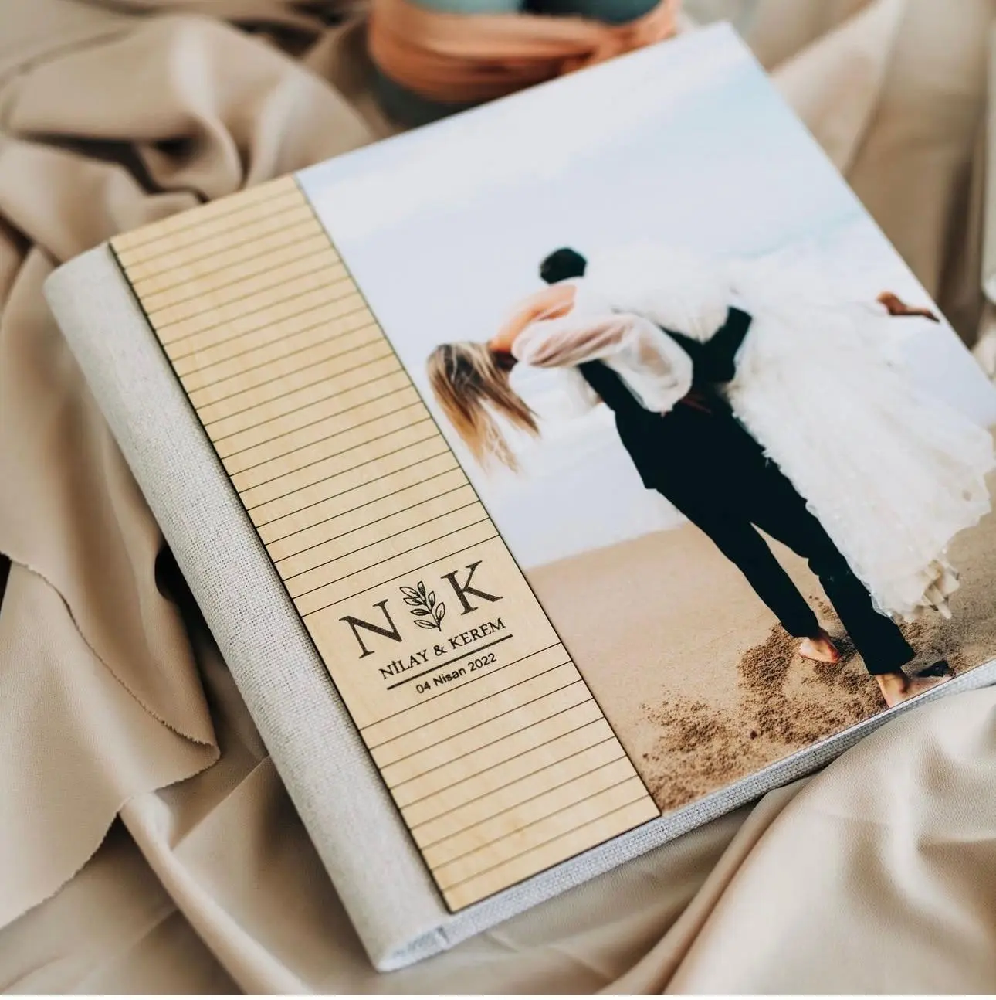
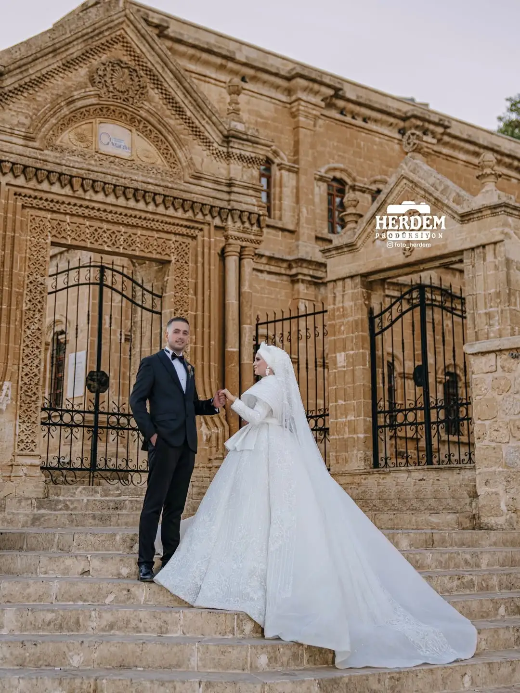

Albüm Tasarımı
Modern ve klasik çizgide, özenle hazırlanan baskı albümleri.
Foto Herdem; düğün, nişan ve özel gün çekimlerinde sıcak bir hikâye dili kurar. Amaç sadece fotoğraf çekmek değil, yıllar sonra da aynı duyguyu hissettiren bir arşiv oluşturmaktır.
Kısa bir özetle ne sunduğumuzu göstermek için hazırlanmış bölüm.

Modern ve klasik çizgide, özenle hazırlanan baskı albümleri.

Altın saat ışığı ve doğal sahnelerle romantik kareler üretiriz.
Çiftin tarzına, mekânına ve günün akışına göre şekillenen bir çalışma düzeni kuruyoruz.